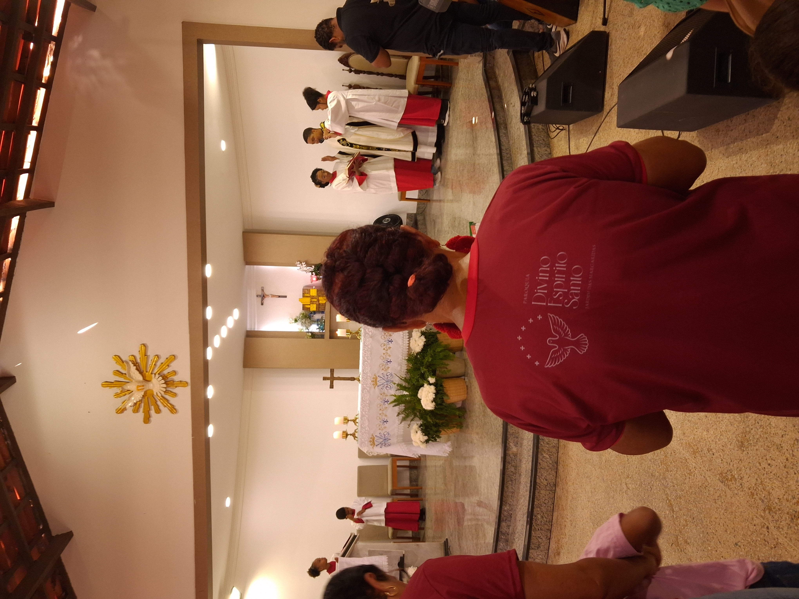
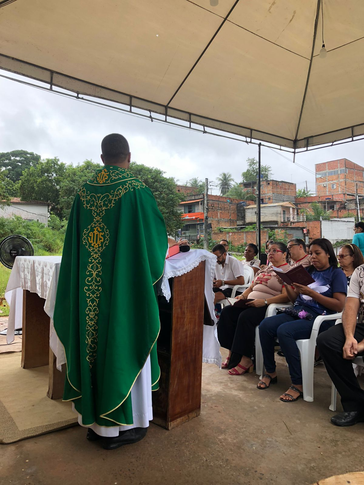
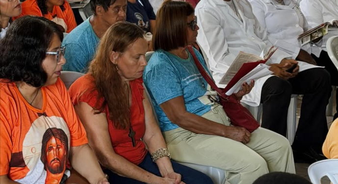
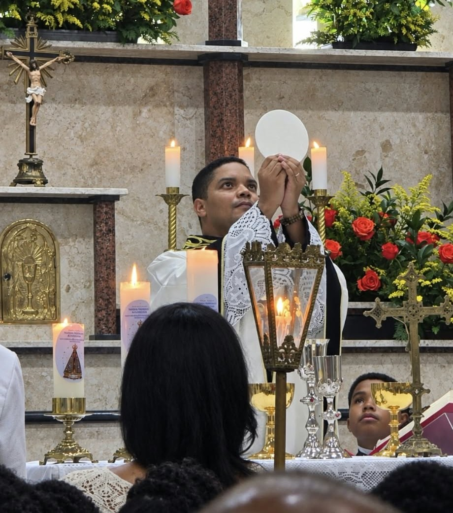
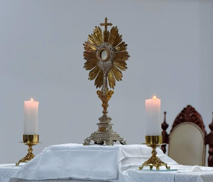
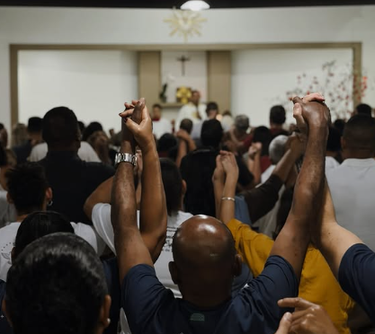

Igreja Matriz
Paróquia Divino Espírito Santo
O coração da nossa paróquia, onde a comunidade se reúne para celebrar a Santa Missa e viver a fé.

O coração da nossa paróquia, onde a comunidade se reúne para celebrar a Santa Missa e viver a fé.

Uma comunidade acolhedora, unida na oração e na caminhada da fé.

Cuidado e acolhida para todos, seguindo os passos de Cristo, o Bom Pastor.
A Paróquia Divino Espírito Santo nasce como fruto da graça de Deus e do amadurecimento da fé de seu povo. Elevada à condição de paróquia, esta igreja particular assume, com renovado ardor missionário, a missão de ser presença viva de Cristo no coração da comunidade, guiada pela ação amorosa e constante do Espírito Santo.
Em nossa caminhada paroquial, realizamos celebrações da Santa Missa, encontros de oração, catequese para crianças, jovens e adultos, grupos de juventude e diversas iniciativas pastorais e sociais.
Cada atividade é expressão de uma Igreja que evangeliza, forma discípulos missionários e se coloca a serviço dos que mais precisam, promovendo dignidade, esperança e solidariedade.
Fortalecemos ainda mais nossa missão de ser sinal de unidade e comunhão. Aqui, cada pessoa é chamada a participar ativamente da vida paroquial, colocando seus dons a serviço da evangelização.
Convidamos você e sua família a conhecerem nossas atividades, celebrarem conosco e fazerem parte desta história de fé que continua a ser escrita sob a luz do Espírito Santo.
Igreja Matriz
Terças e Quintas-feiras
16h30 às 19h
Igreja Matriz
Quintas-feiras
18h às 20h30
Igreja Matriz
19h
Com. Nossa Sra. do Carmo
16h

Seja muito bem-vindo à Paróquia Divino Espírito Santo. Somos uma comunidade viva, unida e guiada pelo Espírito Santo. Sinta-se em casa e participe conosco.
Pe. Caio Silva Pároco
Há um lugar para você em nossas pastorais e comunidades. Procure a secretaria e descubra onde servir.
As portas da nossa igreja estão sempre abertas. Venha celebrar a Santa Missa e adorar o Santíssimo.
Precisando de uma palavra amiga ou de uma oração, fale com a gente. Ninguém caminha sozinho.
Os sinais da graça de Deus na vida da Igreja
A porta da vida cristã, que nos faz filhos de Deus.
O perdão e a reconciliação com Deus e com a Igreja.
O Corpo e o Sangue de Cristo, alimento da nossa fé.
A plenitude do Espírito Santo para a missão.
A aliança de amor entre o homem e a mulher diante de Deus.
O chamado para servir como bispo, padre ou diácono.
Conforto e força na doença e na fragilidade.
Reflexões para alimentar a alma e fortalecer a fé

"A misericórdia do Senhor é a razão de não sermos consumidos; as suas misericórdias são inesgotáveis." (Lamentações 3:22)
Deus nunca desiste de nós. Cada dia é uma nova oportunidade para recomeçar...

"Orai sem cessar." (1 Tessalonicenses 5:17)
A oração é o diálogo da alma com Deus. Mesmo no silêncio, Ele nos escuta...
"Amai-vos uns aos outros como eu vos amei." (João 15:12)
O amor que partilhamos é o verdadeiro testemunho da nossa fé...
O dízimo é um gesto de fé e compromisso com a Igreja.
Conte-nos sua intenção. Ela será levada ao altar e à oração da nossa comunidade.
Enviar pedido de oraçãoEstamos de portas abertas para receber você
Rua das Bromélias Brancas, nº 370, Jardim das Margaridas, Salvador - BA
Igreja Matriz Divino Espírito Santo
Secretaria: (71) 3333-4444